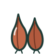

Calendrier des saisons
Octobre
33 produits de saison
JFMAMJJASOND
de saisonhors saisonoctobre
Légumes · 22
- Betterave
- Blette
- Brocoli
 Carotte
Carotte Céleri
Céleri- Chou
 Chou de Bruxelles
Chou de Bruxelles- Chou-fleur
- Concombredernier mois
 Courge
Courge- Courgettedernier mois

Échalote